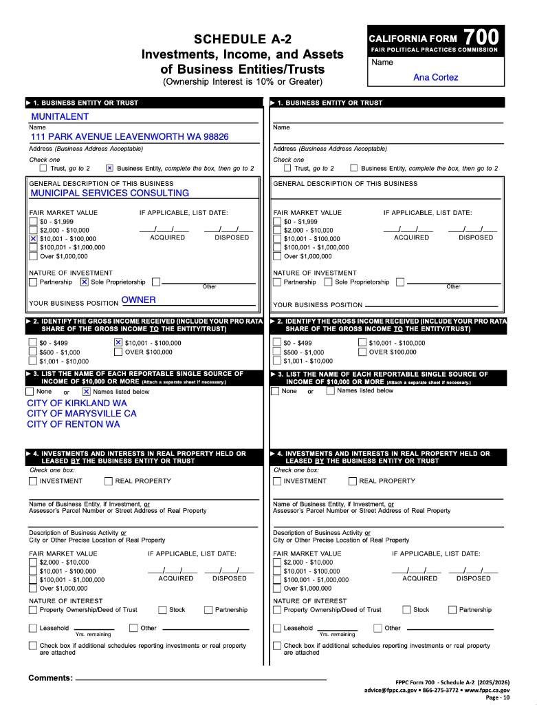

Before Hollister cuts more workers or turns public services over to outside contractors, residents deserve to examine the record of the City Manager leading the restructuring.
THE RECORD AT THE TOP
Ana Cortez's earlier résumé includes conventional career advancement. But once she moved into top municipal leadership, the outcomes changed. Helena, Leavenworth and Carnation did not fail in exactly the same way. What they share is that the management arrangement itself did not endure.
Helena credited Cortez with real fiscal and operational reforms, including budget, procurement and process changes. But an outside investigation also documented a serious rift with staff and communication problems. The harassment allegations themselves were not sustained as violations of City policy.
The City and Cortez ultimately agreed to end the relationship after roughly a year.
It was that the City paid heavily to end a leadership relationship despite the reforms it credited Cortez with delivering.
In 2021, Leavenworth restructured the City Administrator role so Mayor Carl Florea resumed direct supervision of City staff while Cortez shifted toward strategic projects. Cortez resigned months later.
This is not a Carnation-style labor judgment or financial scandal. The failure is narrower: the operating model Cortez was hired to lead did not survive her tenure.
Cortez's administration eliminated all four bargaining-unit employees. Research materials summarizing the arbitration show that the City subsequently used contractors and/or non-bargaining-unit personnel for bargaining-unit work and failed to timely fill covered positions.
The arbitrator ordered the City to offer reinstatement, provide full back pay and stop improperly contracting out bargaining-unit work.
“The staff we have now reflect a city that is entrepreneurial, that is innovative.”Statement attributed to Cortez in reporting summarized in the research file after the Carnation layoffs.
Teamsters estimated back-pay exposure at approximately $500,000. That number is a union estimate, not a verified final City payment.
Carnation is the clearest warning for Hollister because the efficiency strategy did not survive neutral review.
Hollister has already eliminated three Community Development positions, discussed broader workforce reductions, explored outside service delivery and added management and administrative capacity.
The larger layoff proposal was delayed when the Council used a roughly $20 million sewer-fund loan to balance the FY 2026–27 budget. Animal Care & Services remains City-operated in the current public record.
That means Hollister still has a choice: scrutinize the restructuring now, or find out later what the actual costs are after experienced workers and public capacity are gone.
Cortez projected approximately $936,000 in annual savings from the Community Development reorganization. During the same period, Hollister brought in, appointed or placed people into senior management and City Manager-office roles.
On this comparison, the published or authorized pay attached to these six placements equals roughly 97.5% of the $936,000 savings claim before benefits.
Hollister also opened recruitment for a new Deputy Finance Officer — Construction & Capital Management at a published minimum of approximately $153,890. Adding only that minimum pushes the comparison above $1.06 million.
Permanent managers are also eligible for City-paid benefits. Once health coverage, pension contributions, life and disability insurance, leave and other compensation are included, the City's actual management cost is higher.
If frontline workers are being told the City must do more with less, residents deserve the complete management-cost calculation too.
Cortez's Form 700 Schedule A-2 identifies MuniTalent as her private business: sole proprietorship, owner, fair market value and gross income each reported in the $10,001–$100,000 range, with municipal services consulting as the business description.
The same schedule lists single sources of income of $10,000 or more from City of Kirkland WA, City of Marysville CA and City of Renton WA.
Research materials show the Hollister Human Resources, Risk & Technology Director recruitment appeared through MuniTalent channels while Cortez was City Manager and ultimate hiring authority. Cortez has said the service was performed without charge. An ethics expert cited by Santa Clara University's Markkula Center characterized the ethical risk as relatively low while questioning the absence of independent “guardrails.”

A City of Renton amendment signed in March 2026 increased Cortez's consulting agreement from $11,300 to a maximum of $41,000, authorized up to 220 additional hours at $135/hour, and extended the work through December 31, 2026.
Cortez began as Hollister City Manager on February 2. Her Hollister agreement makes City business the priority and, after July 1, limits compensated outside work to 12 hours per month without express prior Council consent.
Her own Form 700 already lists Renton among MuniTalent income sources of $10,000 or more. This overlap does not itself prove a contract violation. The City should release the Renton invoices, actual work dates, monthly hours and any Hollister Council approvals.
City workers are asking Hollister to protect public services, preserve experienced crews and give workers and residents a real seat at the table before major restructuring decisions are made.
BACK TO WE ARE HOLLISTER ADD YOUR NAME